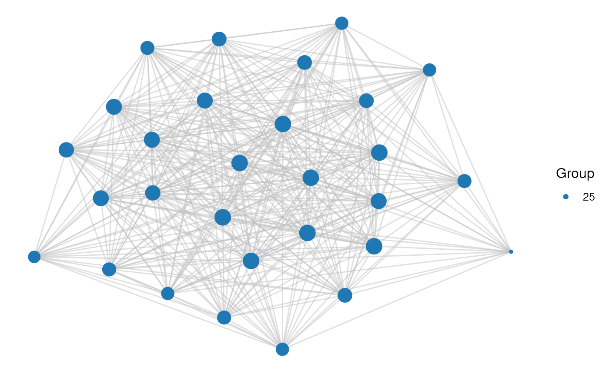
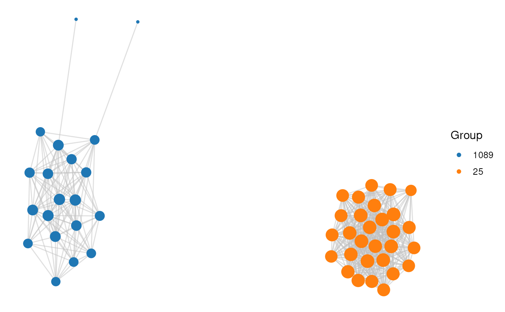
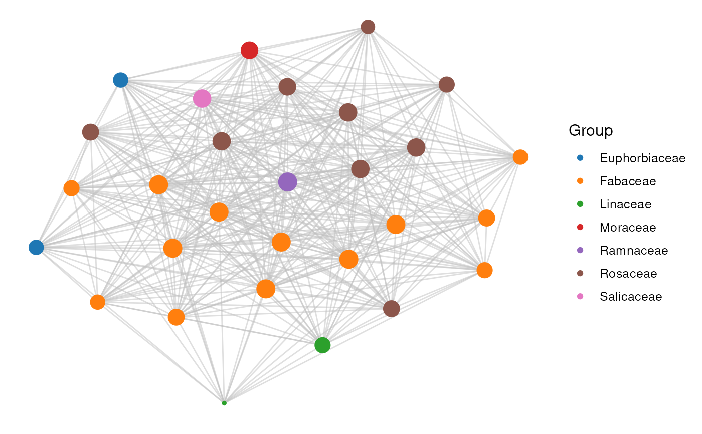

Plot network
Usage
plot_network(
network = NULL,
clusters = NULL,
cluster_id = NULL,
color_by = "cluster",
interactive = FALSE,
dim_interactive = c(600, 600)
)Arguments
- network
The synteny network represented as an edge list, which is a 2-column data frame with each member of the anchor pair in a column.
- clusters
A 2-column data frame with the variables Gene and Cluster representing gene ID and cluster ID, respectively, exactly as returned by
cluster_network.- cluster_id
Character scalar or vector with cluster ID. If more than one cluster is passed as input, clusters are colored differently.
- color_by
Either "cluster" or a 2-column data frame with gene IDs in the first column and variable to be used for coloring (e.g., taxonomic information) in the second column.
- interactive
Logical scalar indicating whether to display an interactive network or not. Default: FALSE.
- dim_interactive
Numeric vector of length 2 with the window dimensions of the interactive plot. If interactive is set to FALSE, this parameter is ignored.
Examples
data(network)
data(clusters)
# Option 1: 1 cluster
cluster_id <- 25
plot_network(network, clusters, cluster_id)

# Option 2: 2 clusters
cluster_id <- c(25, 1089)
plot_network(network, clusters, cluster_id)

# Option 3: custom annotation for coloring
species_order <- c(
"vra", "van", "pvu", "gma", "cca", "tpr", "mtr", "adu", "lja",
"Lang", "car", "pmu", "ppe", "pbr", "mdo", "roc", "fve",
"Mnot", "Zjuj", "jcu", "mes", "rco", "lus", "ptr"
)
species_annotation <- data.frame(
Species = species_order,
Family = c(rep("Fabaceae", 11), rep("Rosaceae", 6),
"Moraceae", "Ramnaceae", rep("Euphorbiaceae", 3),
"Linaceae", "Salicaceae")
)
genes <- unique(c(network$node1, network$node2))
gene_df <- data.frame(
Gene = genes,
Species = unlist(lapply(strsplit(genes, "_"), head, 1))
)
gene_df <- merge(gene_df, species_annotation)[, c("Gene", "Family")]
plot_network(network, clusters, cluster_id = 25, color_by = gene_df)
